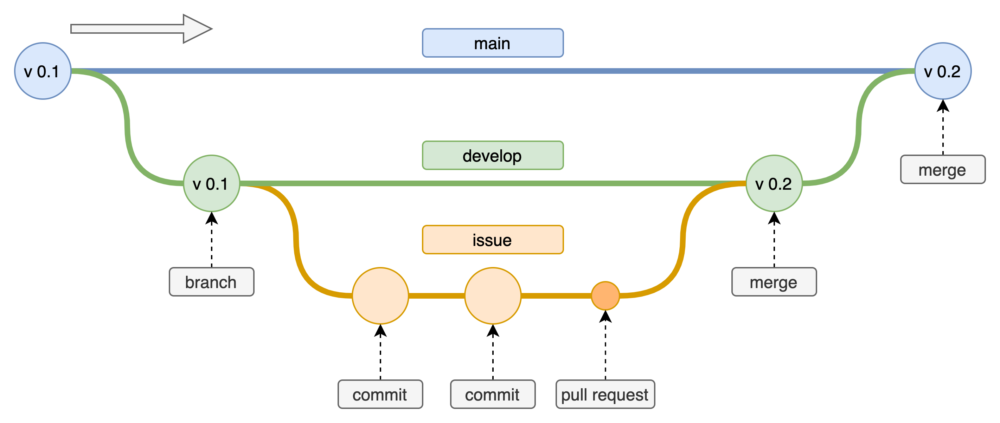
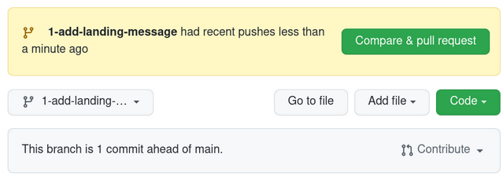
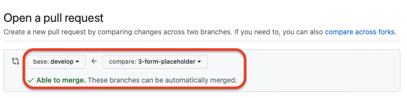
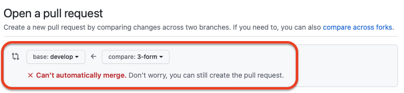
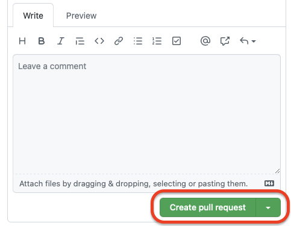
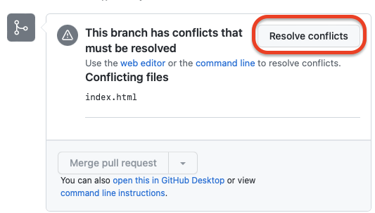
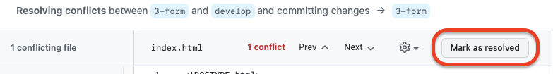
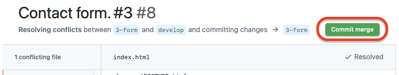

GitHub Workflow
Comment va-t-on s'organiser grâce à GitHub ?
O + Offrant
- 2 projets
- Back-end
- Front-end
- Même logique dans GitHub pour la soumission des modifications apporter dans le code.
GitHub workflow
Dans l'ordre des actions recommandées
- Créer une branche
- Faire une modification dans le code
- Créer une pull request
- La review du code
- Merge votre pull request
- Supprimer la branche

1. Créer une branche
- Bonne pratique = ne pas travailler sur la branche master
- Se positionner sur la branche develop (development)
- A partir de la branche develop, créer une branche relative à l'issue. (Exemple ajouter une navbar)
git checkout develop
git checkout -b navbar
2. Modifier le code
Dans la branche navbar
git status
git add A
git commit -m "Add search bar to navbar"
...
git add -A
git commit -m "Add logo to navbar"
- Les commentaires des commits doivent être en anglais.
Lorsque que l'on est satisfait des modifications apportées
git push
3. Créer une pull request
- Pour créer une pull request on se retrouve sur GitHub

- Clique sur Compare & pull request

Et on compare par rapport à la branche develop
4. Review du code
Ensuite il y a une review
- 2 situations possibles

- Soit le code est validé = pull request mergée sur la branche develop et l'issue fermée.

- Soit il y a discussion, modification puis validation.

- Il existe un 3ème cas: les conflits

Des conflits surviennent souvent lorsque des coéquipiers travaillent sur différentes branche
s qui affectent un fichier commun.

Sa branche ne reflète plus l'état de la branche develop et que la branche develop a changé parce que quelqu'un d'autre a fusionné (avant lui) les changements affectant son ou ses fichiers.
Ne pas paniquer !!

Créer quand même une pull request

Essayer de résoudre le conflit
Peut être directement résolu depuis l'éditeur de GitHub
Si résolu dans GitHub
- Appuyer sur Mark as resolved

- Puis cliquer sur le bouton Commit merge

Ensuite, si tout se passe bien la branche est libérée du conflit et la pull request peut être mergée sur la branche develop.

Une bonne pratique pour éviter les merge conflicts:
- C'est revenir sur la branche develop et de pull (pour récupérer les modifications).
git branch
develop
navbar
git checkout develop
git pull
- Revenir sur la branche sur laquelle vous travaillez et merger cette branche sur la banche develop (gérer les conflits s'il y en a).
git checkout navbar
git merge develop
# You make some changes on the files of the navbar branch
- Une fois les modifications faites, faire un push suivi d'une pull request sur GitHub.
git add-A
git commit -m "Change conflit on navbar"
git push
git stash / git stash pop

Situation
Message suivant indiqué par Git
git checkout dev
error: Your local changes to the following files would be overwritten by
checkout:
index.html
Please, commit your changes or stash them before you can switch
branches.
(en français)
git checkout dev error: Vos modifications locales aux fichiers suivants seraient écrasées par la fusion : index.html Veuillez valider ou remiser vos modifications avant la fusion.
Qu'est ce qui se passe ?
Vous n'avez pas encore validé (commit) vos modifications et vous risquez de perte votre travail si vous forcez le changement de branche
Raison ?
Vous voulez changer de branche pour une raison X (souvant faire une pull sur la branche develop) mais git me l'interdit et me demande de soit valider (= git add ., git commit -m "") soit ... remiser (= git stash)
2 solutions
- Soit vous validez vos modifications avec un commit dans votre branche de travail puis vous changez de branche.
git branch
develop
* navbar
git add .
git commit -m "commit un peu pourri pour (débloquer) valider la situation et apres changer de branche"
git checkout develop
2. Soit vous "remiser" vos modifications pour plus tard
git branch
develop
* navbar
# Je remise les modifications pour plus tard car je ne suis pas encore près à commiter.
git stash
git checkout develop
# Je regarde bien que je suis sur une autre branche.
git branch
* develop
navbar
# Je récupère les modifications de la branche develop.
git pull
# Je retrouve vers ma branche de travail.
git checkout navbar
# Je libère ma remise (mes modifications).
git stash pop
git stash
Le stashing est pratique si :
- vous avez besoin de changer rapidement de contexte et de travailler sur autre chose
- mais que vous êtes en plein dans un changement de code et que n'êtes pas tout à fait prêt à commiter.
Mini conclusion pour git stash
- Soit vous débloquez la situation avec un commit
- Soit vous utilisez le stashing pour remiser vos modifications à plus tard
- Si utilisation de git stash ne pas oublier git stash pop pour libérer la "remise"
Conclusion :
- Créer une nouvelle branche à partir de la branche develop (pas master).
- Soumettre les pull request sur GitHub par rapport à la branche develop (pas par rapport à master).
- Avant de soumettre une pull request sur GitHub une bonne pratique et de récupérer les modifications de de la branche develop et de régler les conflits de sa branche en interne.
Références :
git branch
navbar
git checkout develop
git pull
git checkout navbar
git merge develop
# You make some changes on the files of the navbar branch
git add -A
git commit -m "Change conflit on navbar"
git push